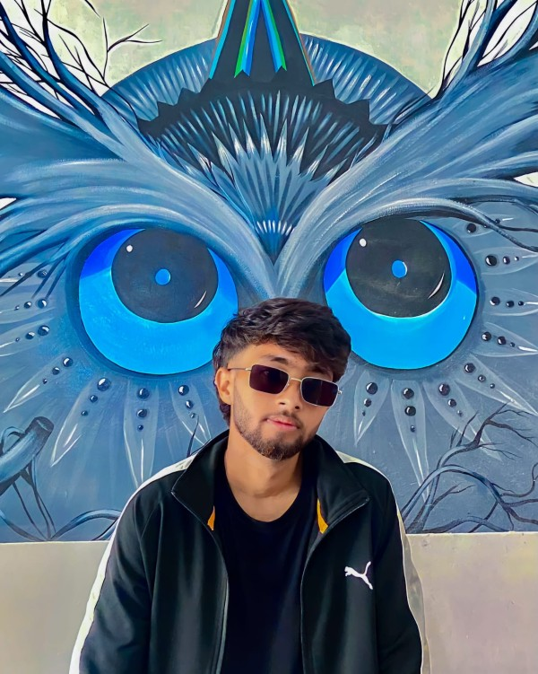

Santosh Upadhyay
Student
Currently a CSE Student from Far-Western University
I am Santosh Upadhyay, an ambitious student on a journey to expand my knowledge and skills in IT field. My academic pursuits have provided me with a strong foundation in Frontend development, and I'm eager to continue learning and growing in this dynamic field.
As a student, I've actively engaged in Society of Engineering Students, which have enriched my experiences and broadened my horizons.
I approach my studies with enthusiasm and a strong work ethic, constantly seeking opportunities to challenge myself and acquire new insights. I believe that education is a lifelong journey, and I'm excited about the possibilities that lie ahead.
Feel free to explore my portfolio to learn more about my academic endeavors and aspirations.